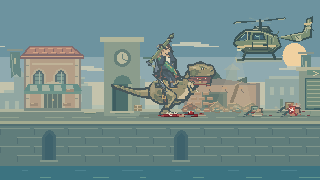
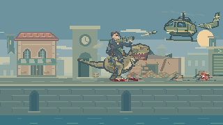
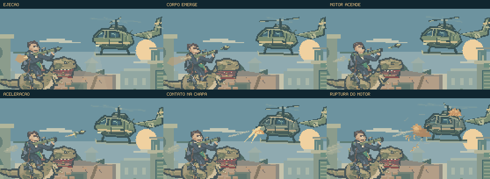
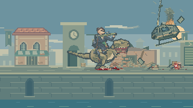
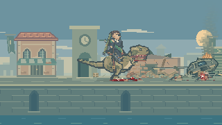
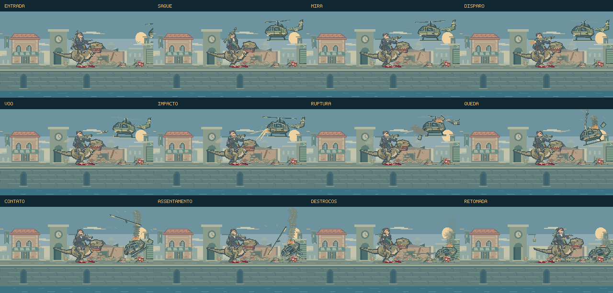

Um novo alvo no céu.
Depois dos ataques iniciais no pátio, um helicóptero entra pela direita. O cavaleiro percebe o rotor, guarda o fuzil e leva o RPG ao ombro. O disparo interrompe o voo, e a aeronave perde peças e sustentação antes de atingir a rua ao fundo.
Jogar o encontroAssistir à composição- Perceber a aproximação
- Sacar e mirar
- Lançar e atingir
- Perder sustentação
- Assentar e prosseguir
O disparo começa antes da explosão.
Revisão do disparo e da destruição: oito segundos de composição dirigida, gerados pelo renderizador nativo. Simulação e vídeo a 60 quadros por segundo, câmera fixa, sem áudio e sem combate em primeiro plano. É um estudo de arte e encenação; não é uma partida gravada.

Reconhecimento, decisão e ação.
O som do rotor precede a entrada completa. Três pássaros deixam os telhados, a luz varre o pátio e a corrente de ar levanta poeira. O dinossauro acompanha a aeronave com o pescoço enquanto o cavaleiro troca de arma.
A fuselagem tem painéis, janelas, entradas de ar, antenas e patins separados. A hélice usa posições projetadas das pás, com rastros discretos de movimento. O helicóptero começa a recuar e subir quando o lançador termina de apontar.
Da boca do RPG à fuselagem.
O foguete emerge do tubo antes de acender o motor. O pequeno sopro da ejeção dá lugar à chama, à abertura das aletas e à aceleração. Fumaça e som acompanham essa mudança, enquanto o jato traseiro permanece no local do disparo.
O impacto rompe a chapa exatamente onde o projétil toca. As faíscas saem dessa superfície; a abertura acompanha a aeronave. Os volumes quentes se expandem, derivam e esfriam. Pouco depois, a cobertura do motor cede numa segunda ruptura.



A queda tem peso e consequências.
Há um breve intervalo entre o impacto e a perda de altura. O motor falha, a cauda rompe, o rotor se desprende e o nariz inclina. Cada peça herda o movimento da parte da aeronave de onde saiu.
No chão, a poeira parte do patim que toca primeiro. O trem de pouso cede, a porta se solta e a fuselagem comprime e assenta. O vidro tem reflexos ligados à inclinação; metal exposto, trincas e dobras mostram a progressão do dano. Carcaça, lâminas, fragmentos e marcas permanecem no pátio.
Um desfecho antes dos guardas.
A grade do primeiro abrigo permanece fechada durante os 6,2 segundos da nova sequência. Feka pode se mover ali enquanto o enquadramento conserva a ação ao fundo. A grade abre após a queda e a recuperação do cavaleiro.
Depois, o jogador atravessa o pátio e a segunda praça até o primeiro confronto. A sequência posterior conserva suas relações de causa e efeito. Pausar congela a cena; retomar um trecho já concluído conserva a destruição sem repetir os disparos.
O modo de movimento reduzido mantém a trajetória e a queda, com menos fumaça, rastros e oscilações decorativas.

Doze momentos da encenação.
